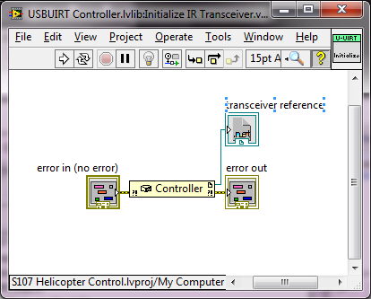
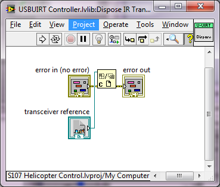
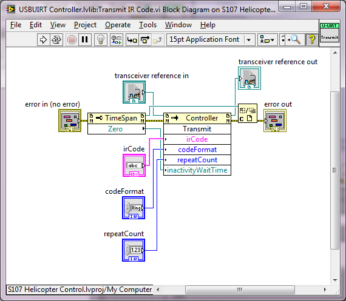
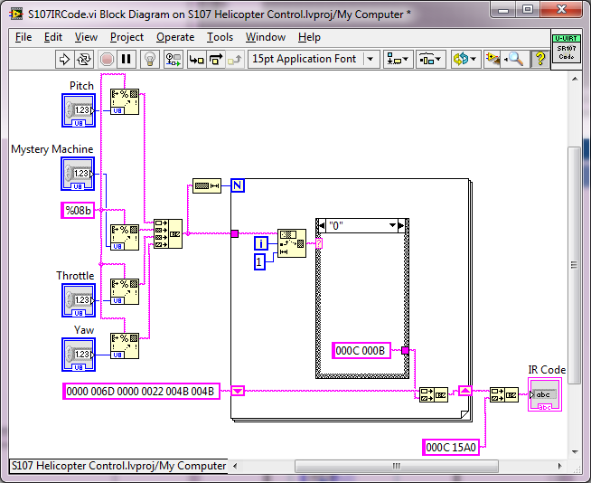
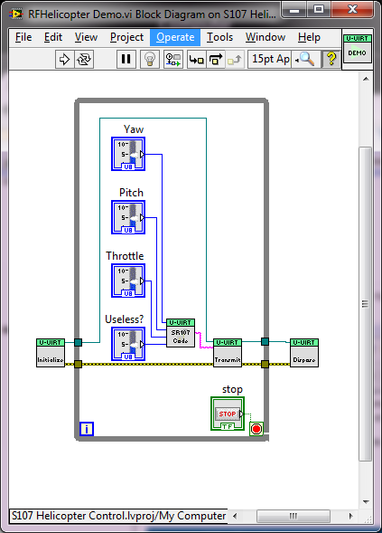
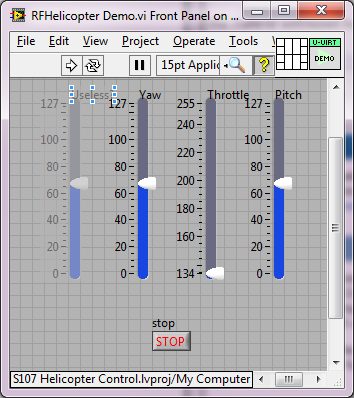

Controlling the Syma S107 IR Helicopter Using the USBUIRT and LabVIEW
Overview
This example discusses the attached implementation which can interface with the USBUIRT device in order to transmit specially encoded IR codes in order control the Syma S107 IR Helicopter. The code is divided into a Library which contains a typical Initialize, Transmit, Dispose structure, an IR Code generator for the S107 and a demo application which shows as an example how these VIs fit together. The IR encoding schema was experimentally determined and reverse engineered from the stock controller provided along with purchase of the S107.
Table of Contents
1. USBUIRT and Pronto Encoding
The USBUIRT Controller (Universal Serial Bus, Universal Infrared Receiver-Transmitter) is a device capable of sending a receiving IR codes in many different formats. For the sake of this example we will be using pronto encoding. Pronto encoding can be explored in further detail in the following article (Infra Red Signals - Pulse Width Method) while information in the USBUIRT device can be found at (USB-UIRT Home).
The USBUIRT .NET Wrapper
The USBUIRT is released with a .NET wrapper available on the previously linked website. The wrapper contains many functions which were not implemented in this example. The primary object in the USBUIRT wrapper is the Controller object. This object contains asynchronous and synchronous learning and transmitting functions. The learning functions were used along with their example program to reverse engineer the coding structure of the helicopters IR codes.
The .NET Wrapper Controller object contains a Transmit function which is implemented in it's own VI. The UsbUirtManagedWrapper.dll DLL file contains the .NET Wrapper and can be used to implement many other functions in LabVIEW.
The Initialize IR Transceiver.vi can be called to create an instance of the Controller object at the beginning of execution. It should not be called repeatedly as this will slow down the efficiency of the application. If multiple transmissions are desired, the Initialize function should be called outside of any loop iterations. The Dispose IR Transceiver.vi should be called, in kind, at the end of the application to dispose of the .NET object. Failure to dispose of the object can result in LabVIEW crashing and memory leaks.


The Transmit IR Code.vi allows the user to interface with the .NET Transmit function for the Controller object. The following parameters can be used when this function is called.

All three of these functions are packaged into USBUIRT Controller.lvlib which can be considered the "Wrapper Library" for the USBUIRT.
Pronto Encoding Overview
Although the Pronto encoding schema documentation is difficult to find, it is a fairly simple encoding schema. See the link in the top of this section for more detailed information.
All Pronto codes are structured with a header, body and footer. The values of the code string are sets of 4 hex characters. The header for the S107 is 6 sets of 4 values long. These value sets should be delimited by a space. The appropriate header for channel C on the S107 controller is as follows:
0000 006D 0000 0022 004B 004B
The details of this headers meaning are left to the user and are not within the scope of this document (see the previous link about the pronto encoding format). These values were largely experimentally determined using the USBUIRT controllers Learn capabilities.
The footer for the S107 is 2 sets of 4 values long and is as follows:
000C 15A0
The details of the footer are once again left to the reader.
The status of the state of the helicopter is encoded in 4, 8-bit values (one of which is not used for any actual control).
0 values are represented by 000C 000B .
1 values are represented by 000C 001A .
These values had significant experimental variation when reading the codes from the associated helicopter controller, but are functionally equivalent to the other possible values which could represent 0s and 1s.
The S107IRCode.vi takes in a throttle value (between 0 and 127), a forward-to-back pitch value (between 0 and 127), a yaw value (between 0 and 127) and a dummy value (between 0 and 127). These values can be mixed and matched as desired. Each code is executed for approximately 1 second if not interrupted by another code which provides different instructions (in other words, if you provide a full throttle command and nothing else, that throttle will last for 1 second).
The order of these values in the code are as follows:

2. Demo and Further Expansion
Demo

The example program provided to the user gives control over these variables in a loop and shows the appropriate initialization and disposal. The helicopter is extremely responsive at the maximum loop rate. Remember that for an immediate stoppage of the helicopter, the throttle value must be set to 0.

Further Expansion
This application shows basic control over the S107 IR Helicopter in LabVIEW with the USBUIRT controller. The following list is a list of possible expansions which might be provided to the user as well as additional research which might be done: